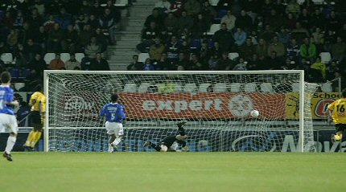
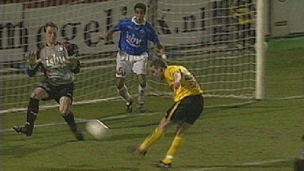
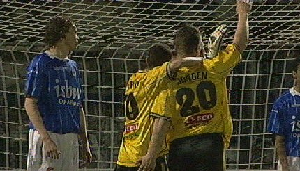

|
FC Den Bosch - Roda JC (0-3) 18 maart 2005 |
FC Den
Bosch - Roda JC (0-3) 18 maart 2005
Cissé scoort uit een voorzet van Kone 0-1, (26').

Mampaey is verslagen.
Hij had al een prima kans verprutst en zou er hierna weer een
missen,
maar deze zit er dus in.
Bodnar in een bodycheck met Snoyl.
Een vrije trap van ruim 30 meter afstand wordt door Bodnar in de
kruising
gejaagd: 0-2, (46').
Een typisch Bodnar-schot.
Mooi voor Bodnar maar ook voor Vloet die hier langs de lijn van
zijn vorige
werkgever staat.
Enorme blunder van Kone die de pan-klare bal niet binnen weet te
schieten.
Op de achtergrond het goed bevolkte Roda-vak dat later op schandalige wijze
werd aangevallen door Bossche heethoofden.
Charlie van den Ouweland die volgend seizoen voor Roda zal
spelen.

Invaller Diego Jongen scoort in de laatste minuut van de
officiële speeltijd
fraai 0-3.

Eindelijk weer eens een overwinning voor Roda terwijl Den Bosch
de 12e
nederlaag op rij lijdt.